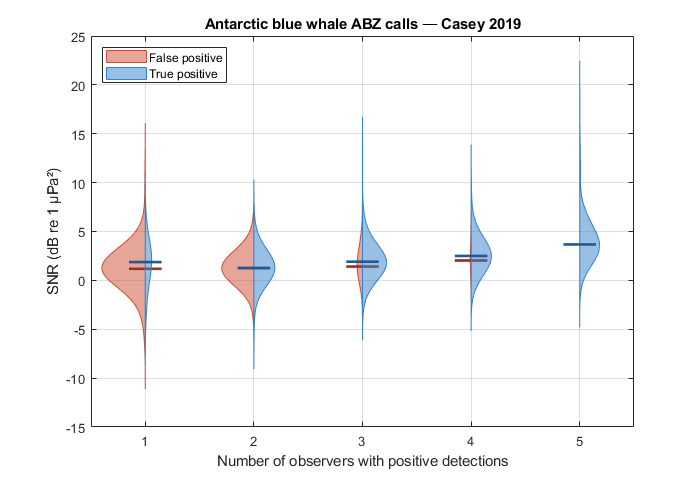

SNR of Antarctic blue whale ABZ calls — Common Ground (Miller et al. in press)
Recomputes SNR for all detections in the multi-observer capture history from Miller et al. (in press, Methods in Ecology and Evolution), using bsnr's spectrogramSlices method with calibrated acoustic levels.
The capture history contains adjudicated detections from five observers: Observers 1-3 — human analysts (Raven Pro annotations) Observer 4 — Ishmael SCC automated detector (250 Hz recordings) Observer 5 — Koogu DNN automated detector (250 Hz recordings)
For each row, SNR is computed separately for each observer that detected the call, then averaged (nanmean) across observers. The key figure shows SNR as a function of the number of observers with positive detections, split by adjudicated verdict (true/false positive).
CANONICAL CONFIGURATION snrType = spectrogramSlices freq = [25 29] Hz (ABZ unit-A band) noiseLocation = beforeAndAfter noiseDelay = 1 s nfft = 1024 (1000 Hz SR → 1.024 s window, ~1 Hz resolution) nOverlap = 768 (75% overlap, matching annotationSNR default) calibration = metaDataCasey2019 (included in examples/) useLurton = false (simple power ratio)
REFERENCE Miller, B.S. et al. (in press). Common ground: efficient, consistent, observer-independent bioacoustic call density estimation with adjudicated ground truth and capture-recapture detection functions. Methods in Ecology and Evolution.
DATA Capture history: included in examples/ (this script's directory) Recordings: Australian Antarctic Data Centre https://data.aad.gov.au/metadata/AAS_4102_longTermAcousticRecordings
Contents
User configuration
Edit the paths below to match your local installation. Recordings are not publicly available; contact aadcwebqueries@aad.gov.au.
wavRoot = 'w:\annotatedLibrary\BAFAAL\Casey2019\wav'; captureHistoryFile = fullfile(fileparts(mfilename('fullpath')), ... 'MultiObserverCaptureHistory_Casey2019_Bm-Ant-ABZ-calls_analysts123sd_judgedBSM_simpleSnr.csv');
Load capture history
fprintf('Loading capture history...\n'); ch = readtable(captureHistoryFile, 'VariableNamingRule', 'preserve'); fprintf(' Total rows: %d\n', height(ch)); % Restrict to adjudicated rows only chJ = ch(logical(ch.judged), :); nRows = height(chJ); fprintf(' Judged rows: %d (true: %d false: %d)\n', nRows, ... sum(chJ.verdict == 1), sum(chJ.verdict == 0));
Loading capture history... Total rows: 10312 Judged rows: 1289 (true: 681 false: 608)
Calibration metadata
metadata = metaDataCasey2019();
SNR parameters
p = struct(); p.snrType = 'spectrogramSlices'; p.useLurton = false; p.noiseLocation = 'beforeAndAfter'; p.noiseDelay = 1; p.nfft = 1024; p.nOverlap = floor(1024 * 0.75); % 768 — matches annotationSNR overlap=0.75 p.freq = [25 29]; p.metadata = metadata; p.showClips = false; p.verbose = false;
Compute SNR per observer
nObs = 5; snrBsnr = nan(nRows, nObs); for obs = 1:nObs fprintf('Computing SNR for observer %d...\n', obs); obsStr = num2str(obs); detectCol = ['detect_observer' obsStr]; t0Col = ['t0_observer' obsStr]; tEndCol = ['tEnd_observer' obsStr]; durCol = ['duration_observer' obsStr]; % Build annotation table for rows where this observer detected detMask = logical(chJ.(detectCol)); nDet = sum(detMask); if nDet == 0, continue; end annots = table(); annots.soundFolder = repmat({wavRoot}, nDet, 1); annots.t0 = chJ.(t0Col)(detMask); annots.duration = chJ.(durCol)(detMask); annots.tEnd = chJ.(tEndCol)(detMask); annots.freq = repmat(p.freq, nDet, 1); annots.channel = ones(nDet, 1); annots.classification = repmat({'Bm-Ant-ABZ'}, nDet, 1); res = snrEstimate(annots, p); % Store back into full-length vector snrBsnr(detMask, obs) = res.snr; end
Computing SNR for observer 1... (parallel) 0 25 50 75 100% |-----------|-----------|-----------|------------| ################################################## Computing SNR for observer 2... (parallel) 0 25 50 75 100% |-----------|-----------|-----------|------------| ################################################## Computing SNR for observer 3... SNR analysis started: 29-Apr-2026 11:28:05 1167 annotations to process (parallel) 0 25 50 75 100% |-----------|-----------|-----------|------------| ################################################## SNR analysis completed: 29-Apr-2026 11:28:07 Computing SNR for observer 4... (parallel) 0 25 50 75 100% |-----------|-----------|-----------|------------| ################################################## Computing SNR for observer 5... (parallel) 0 25 50 75 100% |-----------|-----------|-----------|------------| ##################################################
Aggregate SNR — nanmean across observers per row
chJ.snr_bsnr = mean(snrBsnr, 2, 'omitnan'); chJ.numPositiveObs = sum(chJ{:, strcat('detect_observer', string(1:5))}, 2); fprintf('\nSNR computed. Finite values: %d / %d rows\n', ... sum(isfinite(chJ.snr_bsnr)), nRows); fprintf('bsnr SNR: median=%.1f dB range=[%.1f %.1f] dB\n', ... median(chJ.snr_bsnr(isfinite(chJ.snr_bsnr))), ... prctile(chJ.snr_bsnr(isfinite(chJ.snr_bsnr)), 5), ... prctile(chJ.snr_bsnr(isfinite(chJ.snr_bsnr)), 95)); % Compare against stored SNR from original analysis snrPaper = mean(chJ{:, strcat('snr_observer', string(1:5))}, 2, 'omitnan'); ok = isfinite(chJ.snr_bsnr) & isfinite(snrPaper); r = corr(chJ.snr_bsnr(ok), snrPaper(ok)); fprintf('Correlation with paper SNR: r=%.3f bias=%+.1f dB n=%d\n', ... r, mean(chJ.snr_bsnr(ok) - snrPaper(ok)), sum(ok));
SNR computed. Finite values: 1289 / 1289 rows bsnr SNR: median=1.8 dB range=[-0.9 5.2] dB Correlation with paper SNR: r=0.961 bias=+0.4 dB n=1289
Figure: SNR by number of positive observers × verdict
nPosVals = 1:5;
verdictLabels = {'False positive', 'True positive'};
colours = [0.8 0.3 0.2; 0.2 0.5 0.8];
% Precompute group sizes for proportional width scaling
maxN = 0;
for v = [0 1]
for np = nPosVals
mask = chJ.numPositiveObs == np & chJ.verdict == v & isfinite(chJ.snr_bsnr);
maxN = max(maxN, sum(mask));
end
end
fig = figure('Name', 'Common Ground — SNR by observer agreement', ...
'Units', 'pixels', 'Position', [50 50 700 480]);
ax = axes(fig);
hold(ax, 'on');
offsets = [-0.0 0.0];
legHandles = [];
for v = [0 1]
col = colours(v+1, :);
firstPatch = true;
for np = nPosVals
mask = chJ.numPositiveObs == np & chJ.verdict == v & isfinite(chJ.snr_bsnr);
y = chJ.snr_bsnr(mask);
if numel(y) < 3, continue; end
[f, xi] = ksdensity(y, 'Bandwidth', 1.5);
f = f / max(f) * 0.4 * (numel(y) / maxN);
xOff = np + offsets(v+1);
xPos = [xOff + f*(-1)^(v+1), fliplr(xOff + zeros(size(f)))];
yPos = [xi, fliplr(xi)];
h = fill(ax, xPos, yPos, col, 'FaceAlpha', 0.5, 'EdgeColor', col, ...
'HandleVisibility', 'off');
if firstPatch
legHandles(end+1) = h; %#ok<AGROW>
firstPatch = false;
end
% Median line
plot(ax, xOff + [-0.15 0.15]*(-1)^(v+1), median(y)*[1 1], '-', ...
'Color', col*0.7, 'LineWidth', 2, 'HandleVisibility', 'off');
end
end
hold(ax, 'off');
set(ax, 'XTick', nPosVals, 'XTickLabel', string(nPosVals));
xlabel(ax, 'Number of observers with positive detections');
ylabel(ax, 'SNR (dB re 1 µPa²)');
title(ax, 'Antarctic blue whale ABZ calls — Casey 2019');
legend(ax, legHandles, verdictLabels, 'Location', 'northwest');
grid(ax, 'on'); box(ax, 'on');

Save results
outFile = fullfile(fileparts(mfilename('fullpath')), ... 'snr_abw_casey2019_commonground_results.csv'); writetable(chJ(:, {'t0', 'verdict', 'judged', 'numPositiveObs', 'snr_bsnr', ... 'snr_observer1','snr_observer2','snr_observer3','snr_observer4','snr_observer5', ... 'detect_observer1','detect_observer2','detect_observer3','detect_observer4','detect_observer5'}), ... outFile); fprintf('\nResults saved to: %s\n', outFile);
Results saved to: C:\analysis\bsnr\examples\snr_abw_casey2019_commonground_results.csv